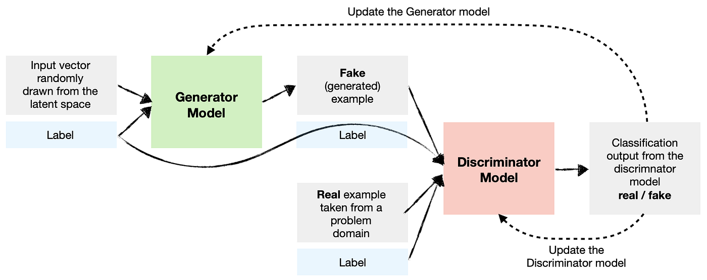

Redes generativas antagónicas (GAN)#
Las GAN (Generative Adversarial Networks) son una familia de modelos generativos. Como su nombre indica, estos modelos son no supervisados, es decir, no requieren etiquetas durante el entrenamiento. Las GAN emplean una estrategia para convertir este problema no supervisado en uno supervisado.
Principio básico de las GAN#
Dos modelos en competencia#
El principio básico de las GAN se basa en el uso de dos redes neuronales que se entrenan de manera simultánea y competitiva:
Generador: Su función es crear ejemplos similares a los de los datos de entrenamiento. Toma como entrada un vector aleatorio (proveniente de una distribución gaussiana) y genera un ejemplo a partir de esta entrada.
Discriminador: Su función es clasificar un ejemplo como real (proveniente de los datos de entrenamiento) o falso (generado por el generador). Es un clasificador simple, similar a los vistos anteriormente.
Un juego de suma cero#
Estos modelos se entrenan de manera simultánea en lo que se denomina un juego de suma cero. El objetivo es que el discriminador no pueda determinar si un ejemplo es real o generado (devuelve una probabilidad de \(0.5\) para cada elemento). Esto significa que el generador es capaz de crear ejemplos plausibles. En este caso, el generador ha aprendido la distribución de probabilidad de los datos de entrenamiento.
Durante el entrenamiento, el generador crea un lote de ejemplos que se mezclan con ejemplos reales (provenientes de los datos de entrenamiento). Estos ejemplos se pasan luego al discriminador para su clasificación. El discriminador se actualiza mediante descenso de gradiente según su desempeño. El generador se actualiza en función de su capacidad para engañar al discriminador.
Podemos comparar al generador con un falsificador y al discriminador con la policía. El falsificador intenta engañar a la policía creando billetes falsos perfectos, mientras que la policía desarrolla nuevas técnicas para detectar los billetes falsos. Así, ambos progresan juntos. Personalmente, considero que la idea detrás de las GAN puede aplicarse a muchas situaciones de la vida real. A menudo damos lo mejor de nosotros mismos en la adversidad.
Nota: En general, durante el entrenamiento de una GAN, el enfoque principal está en el generador. El discriminador solo se utiliza para el entrenamiento. Sin embargo, dado que hay muchas más imágenes no supervisadas (casi todas las imágenes disponibles en internet) que imágenes con etiquetas, puede ser interesante entrenar una GAN con un gran número de imágenes y utilizar el discriminador y el generador como modelos preentrenados para otras tareas.
Arquitectura de las GAN#
La mayoría de las GAN son redes neuronales convolucionales, y esto por varias razones. Por un lado, es fácil para un humano evaluar la calidad de una imagen generada, lo que permite una evaluación directa e intuitiva del desempeño del modelo. Por otro lado, las GAN han mostrado un desempeño impresionante en la generación de imágenes, pero menos en otras tareas como la generación de texto.
La arquitectura de la mayoría de las GAN se basa en el artículo DCGAN.
Nota: Las GAN fueron inventadas antes que las arquitecturas transformer. Recientemente, se han propuesto arquitecturas tipo GAN con un transformer en lugar de una CNN.
Nota 2: Hay un aspecto teórico importante detrás de las GAN, pero no entraremos en detalles en este curso. Para aprender más, puedes referirte al curso CS236 de Stanford y, en particular, a este enlace.
GAN condicionales#
La arquitectura que hemos visto permite generar una imagen realista a partir de un vector aleatorio proveniente de una distribución gaussiana. Sin embargo, no tenemos ningún control sobre la imagen generada. Si entrenamos el modelo con imágenes de personas, generará una persona con atributos aleatorios (sexo, ojos, cabello, piel, etc.). Esto no es muy práctico, ya que en muchos casos buscamos generar una imagen específica y no solo una imagen realista aleatoria.
Para resolver este problema, podemos utilizar una GAN condicional (conditional GAN), que retoma la arquitectura clásica de la GAN pero añadiendo información sobre los datos en la entrada del generador y del discriminador.

Figura extraída del artículo.
Así, podemos dirigir la generación mediante una etiqueta, lo que permite generar imágenes con atributos específicos.
Problemas de las GAN#
La arquitectura de las GAN es una excelente idea y funciona muy bien en la práctica cuando el modelo está bien entrenado. En cursos anteriores, hemos insistido en la dificultad de entrenar un modelo de deep learning y hemos presentado numerosas técnicas para facilitar el entrenamiento. Aquí, tenemos dos modelos que entrenar simultáneamente y de manera antagónica. Este es el principal problema de las GAN: en la práctica, son muy complicadas de entrenar.
Colapso de modo#
El principal problema que preocupa a los usuarios de las GAN es el colapso de modo. Esto ocurre cuando el generador aprende a producir una variedad limitada de resultados, a menudo muy similares. En este caso, el generador no ha logrado capturar la diversidad de los datos de entrenamiento, pero aún así logra engañar sistemáticamente al discriminador. Podemos imaginar que el generador ha aprendido a generar una imagen perfecta, pero que solo puede generar esa imagen.
Este problema deriva directamente del objetivo de entrenamiento de la GAN y es muy difícil de manejar.
Equilibrio entre generador y discriminador#
Durante el entrenamiento, deseamos que el generador y el discriminador progresen juntos. Sin embargo, puede ocurrir que uno de los dos modelos progrese más rápidamente que el otro, lo que puede causar comportamientos caóticos durante el entrenamiento.
También hay otros problemas que mencionar:
Problema de convergencia: El modelo puede tener dificultades para converger hacia una solución estable, incluso después de un entrenamiento prolongado.
Elección de la arquitectura de las redes: Es necesario elegir una arquitectura coherente para el generador y el discriminador.
Algunas estrategias pueden utilizarse para limitar estos problemas, pero no son mágicas. Para estabilizar el entrenamiento, se puede utilizar un Wasserstein GAN y/o un entrenamiento más progresivo.
Ejemplos de uso de las GAN#
GAN para superresolución#
Es posible utilizar las GAN para la superresolución, es decir, para aumentar la resolución de una imagen. El artículo Photo-Realistic Single Image Super-Resolution Using a Generative Adversarial Network propone una arquitectura de GAN que permite esto.

GAN para el aumento de datos#
El aumento de datos consiste en incrementar artificialmente los datos de entrenamiento mediante diversas técnicas. Si no lo has hecho, puedes seguir el curso adicional sobre aumento de datos.
Al reflexionar sobre ello, el aumento de datos básico (recorte, rotación, etc.) puede verse como una especie de modelado generativo donde se generan imágenes de entrenamiento cercanas a la distribución de las imágenes normales.
Partiendo de esta consideración, es bastante evidente ver cómo una GAN puede ayudarnos con el aumento de datos. Si queremos clasificar gatos, nuestra GAN puede generarnos imágenes de gatos en cantidad.
Traducción de imagen a imagen#
Otra aplicación común de las GAN es la traducción de imagen a imagen, introducida en el artículo Image-to-Image Translation with Conditional Adversarial Networks. Esto permite convertir una imagen de un dominio fuente a un dominio objetivo, conservando las correspondencias estructurales y contextuales (según el entrenamiento).

Nota: También se puede utilizar la traducción de imagen a imagen para el aumento de datos. Supongamos que generamos datos falsos mediante un software de videojuegos como Unity y queremos que estas imágenes parezcan realistas. Basta con entrenar una GAN de transferencia de estilo que permita pasar de una imagen a otra.